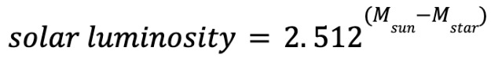

Calculating the apparent magnitude, and understanding the magnitude scale is probably mathematically the most laborious of all calculations involving stars, but as will be seen many times, the magnitude scale provides a very convenient scale for stellar brightness and luminosity. Knowing now the absolute magnitude, we can calculate the luminosity, which can be thought of as the absolute brightness, but by definition is the total watts emitted by the star. Since these values are very large, they are usually denoted as relative values to the luminosity of the Sun, as solar luminosities. Therefore, again, getting the relative luminosity from the absolute magnitude (M) requires the magnitude scale conversion as follows:
For 51 Pegasi, applying this formula again yields a luminosity value of about 1.36 solar luminosities (often denoted 1.36L☉). This calculates the first great piece of the puzzle towards understanding more complex values such as mass and radius of the stars (crucial for the exoplanet detection methods).